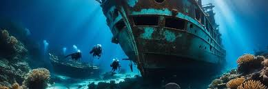

Explore Palawan
Explore Palawan, a tropical paradise known for its crystal-clear waters, stunning beaches, and rich biodiversity. Palawan offers some of the most beautiful islands in the world, such as El Nido and Coron, where towering limestone cliffs meet pristine lagoons. The underground river in Puerto Princesa, a UNESCO World Heritage Site, is a must-see for nature lovers and adventurers alike. You can dive into vibrant coral reefs, perfect for snorkeling and diving enthusiasts. Palawan is home to diverse wildlife, including rare species like the Palawan bearcat and the Philippine tarsier. Whether you’re kayaking through calm waters or hiking to scenic viewpoints, every moment in Palawan is an unforgettable experience. The local culture is rich in traditions, with opportunities to visit indigenous communities and learn about their way of life. Enjoy fresh seafood and local delicacies that will delight your taste buds. Whether for a relaxing getaway or an active adventure, Palawan offers something for every traveler. Explore Palawan and immerse yourself in its natural beauty and captivating charm!
Top Spots in Palawan
- Puerto Princesa Underground River
- El Nido Islands
- Coron Wreck Diving 
Things to Do
There are so many exciting things to do in Palawan that will make your visit unforgettable. You can explore the famous Underground River in Puerto Princesa, a UNESCO World Heritage site, and marvel at its stunning limestone formations. Island-hopping in El Nido is a must, where you can visit breathtaking lagoons and secluded beaches. For diving enthusiasts, the Tubbataha Reefs Natural Park offers some of the most vibrant underwater ecosystems in the world. Coron is perfect for those who love wreck diving, with numerous shipwrecks waiting to be discovered. Hiking up Mount Tapyas offers panoramic views of the island, while kayaking through the mangroves gives a peaceful escape into nature. Palawan also offers an opportunity to swim with the gentle giant sea turtles in Honda Bay. For a more relaxing experience, enjoy a leisurely day at Nacpan Beach, known for its long stretch of golden sand. You can also visit the local markets and taste authentic Palawan delicacies like tamilok and fresh seafood. Whether it's adventure or relaxation, Palawan offers a range of activities for all types of travelers!
Explore Palawan!